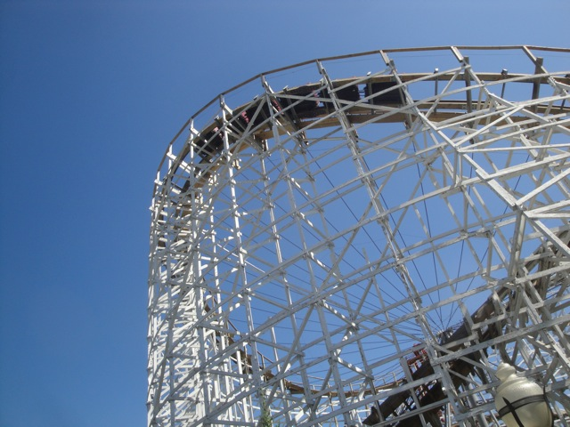
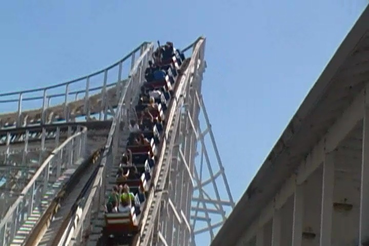
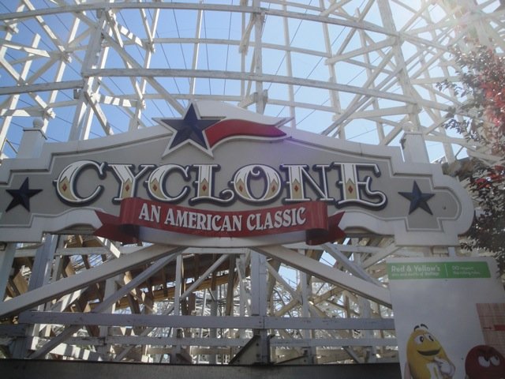

| |

Cyclone Review

We're here at Six Flags New England. Today's ride we'll be traveling back in time to review Cyclone. We get in the trains, pull down the lap bars, and we're off. We roll around a turn and climb up the lift hill. It's quite a big lifthill. Ooh. This should be good. After eventually climbing, and getting another warning from Foghorn to sit down, we went down the first drop. Now the first drop doesn't go down completely to the ground. Odd, but ok. We gain some speed and go around this curve. The curve was really weird. But it was also really rough. Grr, I'm not a fan of this ride. And then it goes down another drop that does take us to the ground. There's a nice pop of ejector air here, but it also jackhammers A LOT at the bottom of this drop. Yeah, we're going pretty damn fast at this point. We then rise up into a BIG hill. We lose a lot of our speed here, but...at least it's not rough anymore. We head down a few small drops. They're not anything special about it. As a matter of fact, it's kind of dull at this point. I really don't get the layout of this ride. But before we go any further, we drop back down to the ground. Well, at least we gained our speed, and it's rough again. But then we rise back up to the point where we were at the second drop, and something was...different. Oh wait, this is where the Topper Track was. So now this ride is suddenly smooth as glass. I mean, it literally just goes from being rough and jiggly to smooth and boring enough to put you to sleep. After going through a minor dip, we continue on until...BAM!!! We head dowm a big drop RIGHT into the structure. And there is some NICE ejector air here. Awesome. A part of this ride made me smile. I'm having fun right now. This is a pleasent surprise. We rise up another hill, get another pop of airtime, and now the topper track has worn off. So yeah, now its rough again. We go through this weird twisty hill. Sadly, no airtime is here. It's just weird. We head up into another small hill, there's no airtime, but I don't mind it. We rise up into another small hill, go through these weird little bumps that I never understood, and then we just glide into the brake run. Uh...I have no idea what just happened. I swear to god, aside from indoor coasters, Cyclone had the hardest to follow and most confusing layout of any coaster I had ever ridden. And not in a good way. I just never understood what this ride was doing. Why was it just dipping up in the air? Why is it rough and painful and then it suddenly just became smooth as glass? Why was it so boring as to put me to sleep and then give me a nice pop of ejector air? Was it a good ride? A bad ride? I have no idea. The ride felt like it was designed by an indecisive committee with compromises to everything and a Frankenstein style layout that looks cool, but when riding it, makes no sense. This was definetly the hardest review for me to write because as I was writing it, I was trying to remember the one ride I got on this ride and I just couldn't understand the ride. I just remember walking off the ride thinking to myself "Uhh...Is that it?" So I didn't have a lot to go off of other than just sheer confusion and disintrest. However, Six Flags has remade Cyclone into a new Rocky Mountain Creation called Wicked Cyclone. And I must say, that looks AWESOME!!! I can't wait to get back to Six Flags New England and ride Wicked Cyclone. Out with the headscratching confusion and in with the RMC Airtime Machine!! =)
5/10
Location: Six Flags New England
Opened: 1983
Died: July 20, 2014
Built by: William Cobb
Last Ridden: July 30, 2011
Cyclone Photos


Home
|